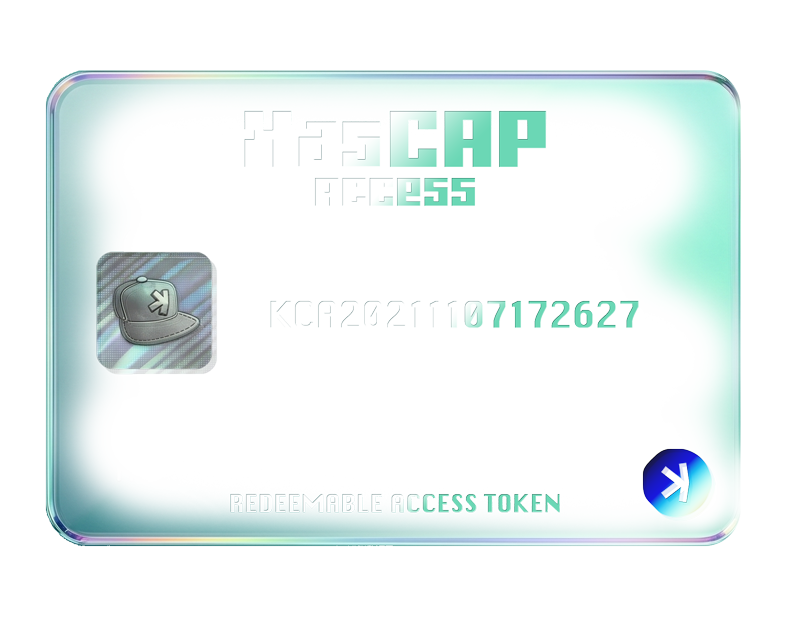

BENEFIT 01
YONAMAXI NFT Giveaway
Receive 1 YONAMAXI NFT for every KCA you hold!
KCA HOLDER ONLY

BENEFIT 01
Receive 1 YONAMAXI NFT for every KCA you hold!
BENEFIT 02
Applies to all future KasCAP NFT releases.
NFTs released before the launch of this benefit program are not eligible.
After purchasing a new KasCAP NFT, complete the dedicated claim form and submit your information.
Once verified, we will refund 10% of the mint price in KAS.
The claim form URL will be shared exclusively in the KCA holders-only Telegram group.
BENEFIT 03
Applies to all future KasCAP NFT releases.
NFTs released before the launch of this benefit program are not eligible.
KCA holders will have the opportunity to exchange their KCA for newly released KasCAP NFTs.
If you would like to participate, please contact us via DM.
PRIVATE INFORMATION
Up to 50% shared with KCA holders
A future NFT collection exclusively for YONAMAXI holders is planned for release.
This limited NFT will be distributed to holders who meet specific YONAMAXI ownership requirements.
At the time of this announcement, YONAMAXI royalties will be adjusted from 0% to 2.5%.
50% of all YONAMAXI royalty revenue will be distributed among KCA holders.
Approximately 50% of the royalty revenue will be reserved to cover Japanese tax obligations. Any unused portion of those funds will also be distributed to KCA holders.
Royalty distributions are currently planned to be made once per year.
As long as you continue to hold KCA, you will remain eligible to receive future distributions.
Additional details will be announced at a later date.